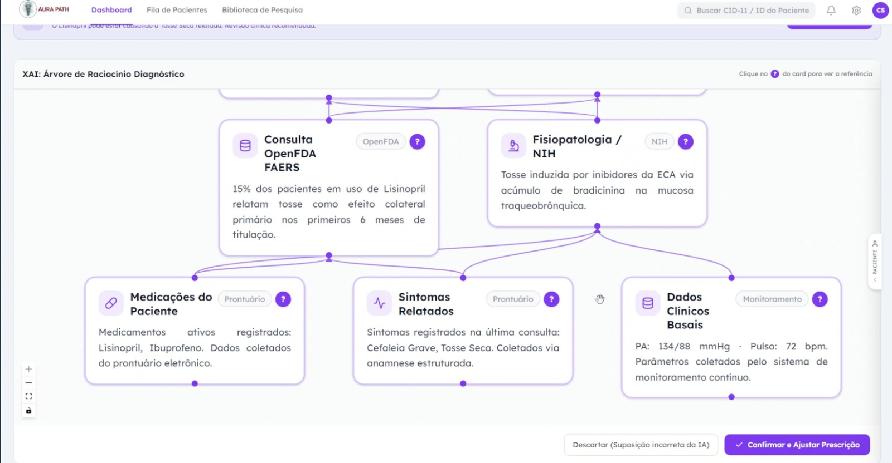

O Aura Path entrega suporte à decisão clínica com raciocínio transparente, baseado em ICD-11 e padrões da OMS — eliminando caixas-pretas e reduzindo iatrogenias causadas por efeitos colaterais de medicamentos.

é o tempo médio que um médico leva pesquisando interações medicamentosas manualmente antes de prescrever.
Diagnósticos errados causados por efeitos colaterais de medicamentos ainda são uma das principais causas de reinternação.
Ferramentas de IA existentes não explicam o raciocínio — gerando desconfiança clínica e impedindo adoção.
Nosso motor de raciocínio ontológico cruza o histórico de sintomas, medicamentos em uso e padrões epidemiológicos para entregar uma árvore de decisão interativa, auditável e baseada em fontes oficiais como NIH e FDA.
Cada conclusão diagnóstica vem acompanhada de uma árvore de raciocínio interativa — você vê exatamente por que o sistema chegou àquela hipótese.
Resultados em menos de 1 minuto, versus 40 minutos de pesquisa manual.
Baseado em ICD-11 e padrões da OMS, com precisão linguística e clínica em qualquer país.
Garantia de segurança legal ao citar fontes oficiais: NIH, FDA e referências validadas.
API direta nos sistemas de Prontuário Eletrônico já utilizados pelos médicos.
Médicos podem corrigir o nexo causal diretamente na interface, refinando continuamente o modelo com curadoria humana.
Adicione prints do seu protótipo abaixo — basta substituir as imagens na pasta assets/
Médicos em postos de saúde e hospitais privados que precisam de suporte diagnóstico rápido sem abrir dezenas de abas.
Que buscam reduzir custos com exames desnecessários e mitigar riscos jurídicos associados a diagnósticos incorretos.
Hospitais de grande porte e redes que precisam de integração de dados em escala global com conformidade ICD-11.
Solicite uma demonstração gratuita e veja o Aura Path funcionando com casos reais do seu contexto.